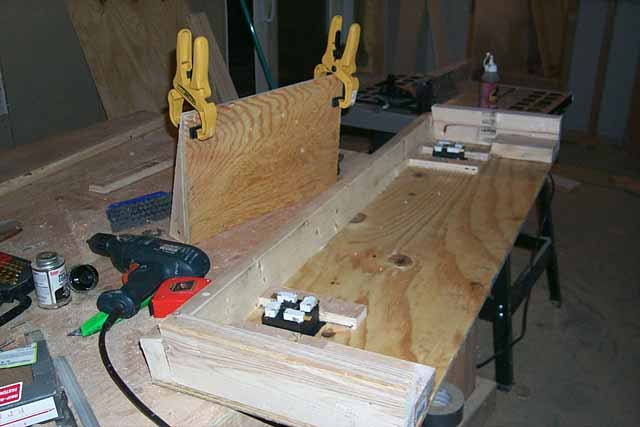
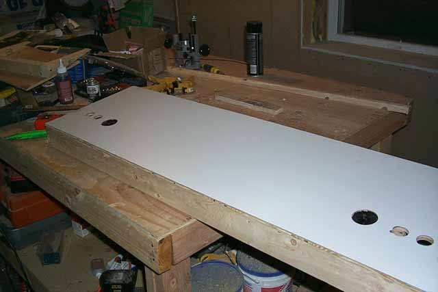
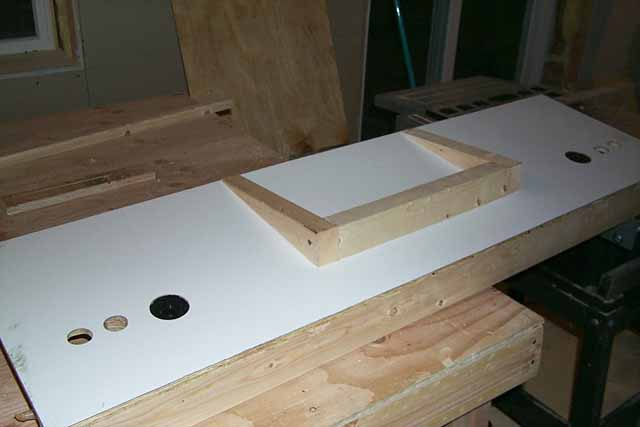

I'm not going to go into
the whole laminating part again on the control panel since its redundant
to the way it was done on the side panels. One problem
I did run into. Home Depot didn't have any grey laminate, so
I picked up a sheet of white and headed over the paint section for a can
of glossy grey spray paint. More on that later, lets
finish up the pedestal and some tricks on getting it mounted....

Now
a couple of things going on at this point. Cut a piece of plywood
which will be the top of the pedestal, add some glue around the top of
the 2x4's which were cut into the shape of the pedestal base then using
1 1/2" wood screws, screw the plywood to the pedestal base.
I used some quick-grip clamps at the very ends to make sure that the bonding
was tight as the glue cured. On the control panel
I've added some 2x4's to the sides, cutting the front facing edges at a
10 degree angle so they sit flush against the front 2x4. Don't
worry that they are taller, these wont be seen. The side
pieces are for strength and also will be the side panel mounting points
later on when the entire kiosk is assembled. With
that done, time to laminate the top surface.

The top surface is laminated,
trim is cut off with the router and laminate bit. Using
a speed bit the fire button holes are cut out from the backside through
(go slow and don't push hard, otherwise the laminate will chip!)
Then using a 2" hole saw bit the joystick opens are cut out.
Going back to the original kiosk photo, you'll notice black panels over
the area where the joystick/fire buttons are layed out.
Well, don't worry if you made some minor chips on the edges of the laminate.
Use some of the spare black laminate and trim out some rectangle shaped
pieces big enough to place over the controller area, mark them and later
on those will be placed over the holes and will cover any mistakes.
Don't place it over yet, remember if your stuck with white laminate instead
of grey, painting still needs to be done.

Okay, got a little ahead
of myself on the 1st photo where I show you putting the plywood on.
If you've done this, no big deal. Center the pedestal base,
using a pencil mark the edges of the pedestal outline.
We will drill some holes into the control panel and this will be our guides
for later on to screw in the screws from underneath the control panel into
the pedestal base.